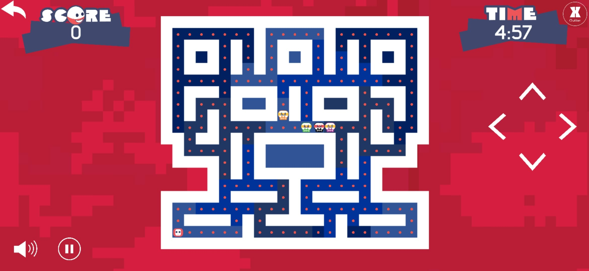
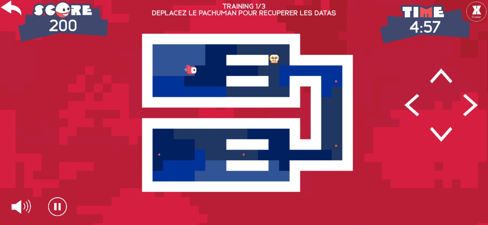

Pac Human
Pac Human est un jeu qui est né de la collaboration entre Ludus Académie - Strasbourg et Athéo Ingénierie. Ce jeu grandement inspiré de Pac-Man a été offert aux clients d'Athéo, avec l'ambition de créer un tournoi pour le plus haut score, donnant sur des cadeaux pour les premiers. Ce jeu a été développé par une équipe composée de Bastien Prob, Anthony Lamour, Nicolas Lehmann et Nicolas Valentin, ainsi qu'avec l'entreprise cliente, soit Isabelle Debreuille, Flora Nicolas, Damien Ebel et Dorian Nicoletti.
Mes contributions :
- Développement du système de navigation du joueur et ennemis
- Prototypage
- Architecture du jeu
|
- Implémentation des animations
- UI/UX
- Optimisations
|

|

|
|

|

|